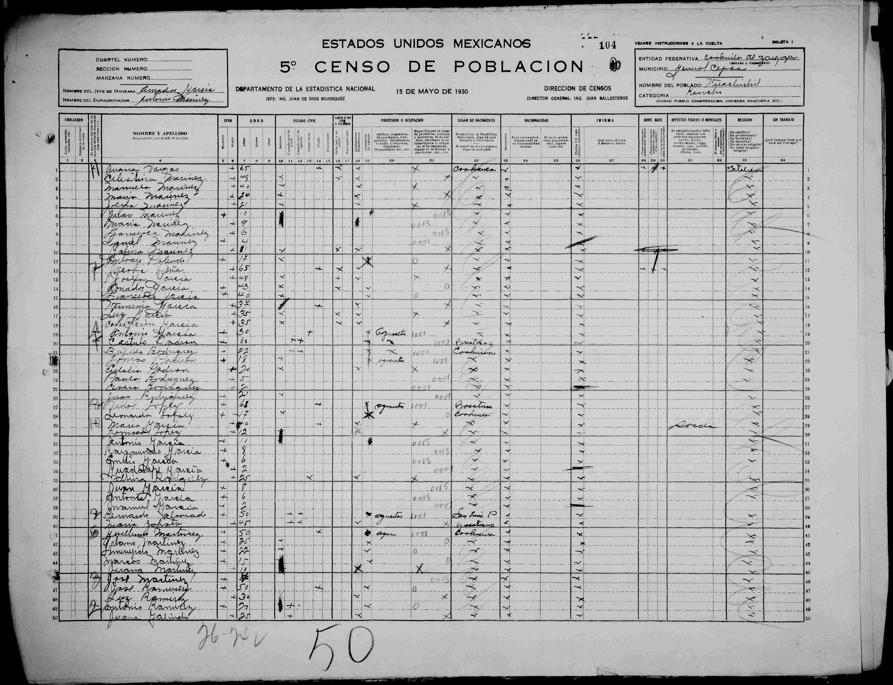

Nacido en el Huachichil a las diez de la noche del 4 de octubre de 1883. Bautizado el 16 de diciembre de 1883 en la Viceparroquia de San Francisco de los Patos. FamilySearch P7LC-66L.
Padre: Jesús García · Madre: Jacoba de la Peña
Bautizo. Patos, 16 de diciembre de 1883
Viceparroquia de San Francisco de los Patos, Diócesis de Durango.
Dieciséis de diciembre del año del Señor mil ochocientos ochenta y tres.
El infrascrito presbítero Manuel Flores Farías bautizé solemnemente y le puse el santo óleo y sagrada crisma a un niño a quien llamé Francisco, nacido a las diez de la noche del cuatro de octubre, aquí en el Huachichil, hijo de Jesús García y Jacoba Peña.
Son los abuelos paternos Jesús García y Rosalía Flores
y los maternos Praxedis Peña y Juana Saucedo.
Manuel Flores Farías.
Censo 1930. Huachichil. Sus hijos con María García

En la misma hoja 104 aparecen, casa de María García (sorda):
Antonio García, 11.
Raimundo García, 8.
Emilio García, 6. (no Emilia)
Guadalupe García, 2.
Volver a la portada